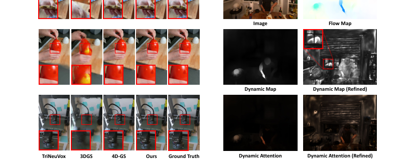
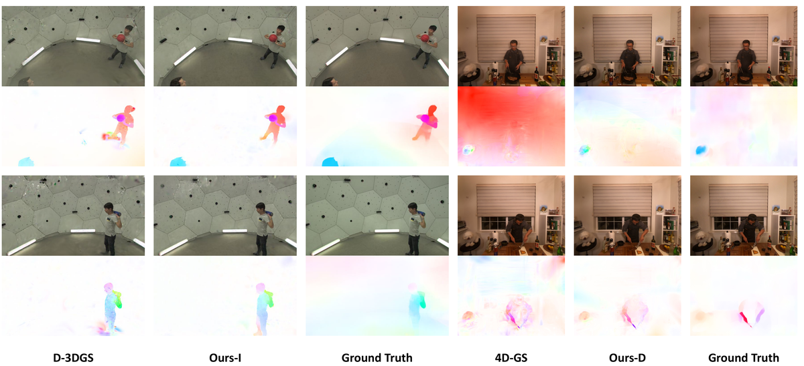
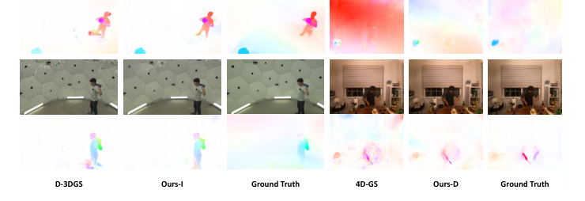

Motion-aware
简单摘要
为了解决上述问题，我们提出了一种用于动态场景重建的新型运动感知增强框架，该框架从光流中挖掘有用的运动线索，以改进动态 3DGS 的不同范式。此外，针对普遍存在的基于变形的范式提出了更难的优化问题，提出了一种瞬态感知变形辅助模块。

一些先驱尝试了不同的策略、迭代或变形来解决这个问题。为了解决上述问题，我们提出了一种新颖的运动感知框架，通过充分利用光流先验来增强动态 3DGS。
核心创新
第一，为了解决上述问题，我们提出了一种用于动态场景重建的新型运动感知增强框架，该框架从光流中挖掘有用的运动线索来改进动态 3DGS 的不同范例。
第二，然后引入了一种新颖的流量增强方法，并对不确定性和损失协作进行了额外的见解。
第三，然后，我们介绍了我们的流量增强，并对培训和与其他监督协作期间的不确定性进行了额外的见解（秒：流量）。
技术细节
对于动态重建任务，我们提出了一种新颖的增强框架，充分利用光流的运动线索来改进现有的动态 3DGS 方法。对于提出更难优化问题的基于变形的范例，提出了一个额外的瞬态感知变形辅助模块（sec：deform）。前者表示相邻帧之间的瞬时运动，而后者则基于具有时间累积的规范场景。

4.1 跨维度运动对应
如何对时态3D场景流进行有效建模是动态场景重建的核心问题。考虑到 NeRF 中基于渲染的深度监督的成功，使用 3DGS 的可微渲染器将场景流投影到图像平面似乎是一个可行的解决方案。虽然渲染中的混合可以自然地处理透明度和遮挡关系，但我们在实践中发现这种基于渲染的监督在应用于光流时表现不佳。
4.2 流量增强
作为基本监督，像素级重建（颜色）损失可以通过我们的动态图来增强。因此，流先验起到了注意力图的作用，引导优化器更加重视当前帧运动较大的区域。为了不将动态部分与静态背景混淆，在 中采用了 3D 前景掩模（使用分割损失联合优化）。
4.3 瞬态感知变形辅助
在迭代范式中，优化良好的场景 可以被视为一个固定锚点，流先验通过该锚点引导高斯到达当前时间的明确目的地。运动注入器考虑到基于变形的 3DGS 基线的 HexPlane 结构，我们建议将瞬态信息显式注入时变体素特征中。前者表示相邻帧之间的瞬时运动，而后者则基于具有时间累积的规范场景。
4.4 优化
我们的运动感知动态 3DGS 框架以端到端方式进行优化。迭代范式的整体训练损失由重建损失和物理损失都配备动态意识给出。请注意，由于基于流的动态图比前景分割更有效，因此不包括分割损失。
$$ \varphi_{i}(\mathbf{x}) = o_i \exp(-\frac{1}{2}(\mathbf{x}-\mu_i)^T\mathbf{\Sigma}_{i}^T(\mathbf{x}-\mu_i)), $$
这条式子给出了论文中的一条核心计算关系。理解时可以先看左侧最终想得到什么结果，再看右侧的 x、exp、x、T 等量如何共同决定这个结果在方法链路中的作用。
$$ \mathbf{C} = \sum_{i=1}^{N} \mathbf{c}_i \alpha_i \prod_{j=1}^{i-1}(1-\alpha_j), $$
这条式子给出了论文中的一条核心计算关系。理解时可以先看左侧最终想得到什么结果，再看右侧的 C、N、c、i 等量如何共同决定这个结果在方法链路中的作用。
$$ 1 / \sigma_t^2 = (\varphi_t / \max_k{\varphi_{k,t}}) \cdot c_t(\mathbf{d}), $$
这条式子给出了论文中的一条核心计算关系。理解时可以先看左侧最终想得到什么结果，再看右侧的 t、cdot、d 等量如何共同决定这个结果在方法链路中的作用。
$$ \widetilde{\mathcal{L}}_{c}= (1-\lambda_c) \Vert\mathbf{C}_t - \hat{\mathbf{C}}_t\Vert_2^2 + \lambda_c \Vert\mathbf{C}_t \odot \mathbf{D}_t - \hat{\mathbf{C}}_t \odot \mathbf{D}_t\Vert_2^2, $$
这条式子给出了论文中的一条核心计算关系。理解时可以先看左侧最终想得到什么结果，再看右侧的 widetilde、L、c、Vert 等量如何共同决定这个结果在方法链路中的作用。
$$ \mathcal{L}^{I}=\widetilde{\mathcal{L}}_c + \lambda_{p} \widetilde{\mathcal{L}}_{p} + \lambda_{f} \mathcal{L}_{f}, $$
这条式子给出了论文中的一条核心计算关系。理解时可以先看左侧最终想得到什么结果，再看右侧的 L、I、widetilde、L 等量如何共同决定这个结果在方法链路中的作用。
$$ \mathcal{L}^{D}=\widetilde{\mathcal{L}}_c + \lambda_{f} \widetilde{\mathcal{L}}_{f}. $$
这条式子给出了论文中的一条核心计算关系。理解时可以先看左侧最终想得到什么结果，再看右侧的 L、D、widetilde、L 等量如何共同决定这个结果在方法链路中的作用。
$$ \widetilde{\mathcal{L}}_{f} &= \mathcal{L}_{f} + \sum\nolimits_{i} \mathbbm{1}(i) \Vert \operatorname{Proj}(\mathbf{v}_{i,t}) \mathrm{\Delta} t - \mathbf{f}_{i,t} \Vert_1, \\ \mathbf{v}_{i,t} &= \mathbf{\Theta}_v(\mathbf{g}_{i,t},\mathbf{g}_{i,t-1},\mathbf{g}_{i,t+1}), $$
这条式子给出了论文中的一条核心计算关系。理解时可以先看左侧最终想得到什么结果，再看右侧的 widetilde、L、f、L 等量如何共同决定这个结果在方法链路中的作用。
实验结论
实验部分主要围绕 我们专门评估了 Cook 、cut 和 Sear 的方法 展开。
对比结果表明，继之前的工作之后，我们使用 PSNR、SSIM 和 LPIPS 评估重建（为了在 Neu3DV（选项卡：dynerf）上进行比较），我们报告基于 AlexNet 的 LPIPS 以与之前报告的基准保持一致，而其他结果仍然使用基于 VGG 的指标。进一步结合定性现象和消融分析，可以看出：如选项卡：hypernerf 所示，我们基于变形的框架在所有指标上都优于所有基线。
| Metrics | Method | Juggle | Boxes | Softball | Tennis | Football | Basketball | Mean |
|---|---|---|---|---|---|---|---|---|
| 3[0]*PSNR | 3DGS-O | 28.19 | 28.74 | 28.77 | 28.03 | 28.49 | 27.02 | 28.21 |
| D-3DGS | 29.48 | 29.46 | 28.43 | 28.11 | 28.49 | 28.22 | 28.70 | |
| Ours-I | 29.55 | 29.60 | 29.54 | 28.19 | 29.71 | 29.60 | 29.37 | |
| 3[0]*SSIM | 3DGS-O | 0.91 | 0.91 | 0.91 | 0.90 | 0.90 | 0.89 | 0.90 |
| D-3DGS | 0.92 | 0.91 | 0.91 | 0.91 | 0.91 | 0.91 | 0.91 | |
| Ours-I | 0.92 | 0.91 | 0.92 | 0.91 | 0.92 | 0.92 | 0.92 | |
| 3[0]*LPIPS | 3DGS-O | 0.15 | 0.15 | 0.14 | 0.16 | 0.16 | 0.18 | 0.16 |
| D-3DGS | 0.15 | 0.17 | 0.19 | 0.17 | 0.19 | 0.18 | 0.17 | |
| Ours-I | 0.16 | 0.16 | 0.16 | 0.16 | 0.16 | 0.16 | 0.16 |
| Scene | cook_spinach | cut_roasted_beef | sear_steak | Mean | ||||||||
|---|---|---|---|---|---|---|---|---|---|---|---|---|
| Metrics | PSNR | SSIM | LPIPS | PSNR | SSIM | LPIPS | PSNR | SSIM | LPIPS | PSNR | SSIM | LPIPS |
| NeRFPlayer | 30.56 | 0.9290 | 0.1130 | 29.35 | 0.9080 | 0.1440 | 29.13 | 0.9080 | 0.1380 | 29.68 | 0.9150 | 0.1317 |
| HyperReel | 32.30 | 0.9410 | 0.0890 | 32.92 | 0.9450 | 0.0840 | 32.57 | 0.9520 | 0.0770 | 32.60 | 0.9460 | 0.0833 |
| D-3DGS | 32.97 | 0.9474 | 0.0870 | 30.72 | 0.9410 | 0.0900 | 33.68 | 0.9552 | 0.0790 | 32.46 | 0.9479 | 0.0853 |
| 4D-GS | 31.98 | 0.9385 | 0.0564 | 31.56 | 0.9394 | 0.0619 | 31.20 | 0.9486 | 0.0455 | 31.58 | 0.9422 | 0.0546 |
| Ours-I | 33.26 | 0.9536 | 0.0822 | 32.64 | 0.9462 | 0.0820 | 33.92 | 0.9570 | 0.0754 | 33.27 | 0.9523 | 0.0799 |
| Ours-D | 32.10 | 0.9367 | 0.0559 | 32.56 | 0.9414 | 0.0589 | 31.60 | 0.9508 | 0.0452 | 32.09 | 0.9430 | 0.0533 |


5.1 实验设置
实验部分主要围绕 我们的方法在具有不同设置的三个数据集上进行评估 展开。结果表明，我们遵循专门评估烹饪、切割和煎炸的方法。
5.2 比较结果
实验部分主要围绕 在这两个多视图基准测试中，我们的方法在大多数场景中都显示出优于竞争对手的显着优势 展开。结果表明，配备我们的运动感知增强功能的两种范例都显示出显着的改进。
5.3 动态重建效率研究
实验部分主要围绕 由于三个原因，所提出的方法能够实现高效的动态重建 展开。结果表明，可以通过fig:efficient（左）验证前景高斯运动与图像尺寸相比是不合理的大。
5.4 消融研究
实验部分主要围绕 在 tab:ablation 中，我们对 HyperNeRF 数据集的小鸡进行了烧蚀实验，以验证我们工作中重要组成部分的有效性 展开。结果表明，运动对应和流监督 我们将所提出的密集对应搜索和基于 KL 的流损失与流渲染和普通损失进行比较。
理解评价
如果把这篇论文放回问题背景里看，它真正的价值在于：为了解决上述问题，我们提出了一种用于动态场景重建的新型运动感知增强框架，该框架从光流中挖掘有用的运动线索，以改进动态 3DGS 的不同范式。这说明作者不是只补一个局部模块，而是在重新组织问题该怎样被解决。
最能支撑这个判断的，还是实验给出的证据：对于动态重建任务，我们提出了一种新颖的增强框架，充分利用光流的运动线索来改进现有的动态 3DGS 方法。换句话说，这些设计并不只是概念上更完整，而是实实在在改变了最终结果。
当然，它离真正成熟的方案还有距离：当前方案的局限在于它仍然受制于计算资源、输入质量或场景复杂度，距离真正稳健的大规模部署还有差距。后续更值得继续推进的方向，是 未来继续提升效率、泛化能力以及在更复杂场景下的稳定性。